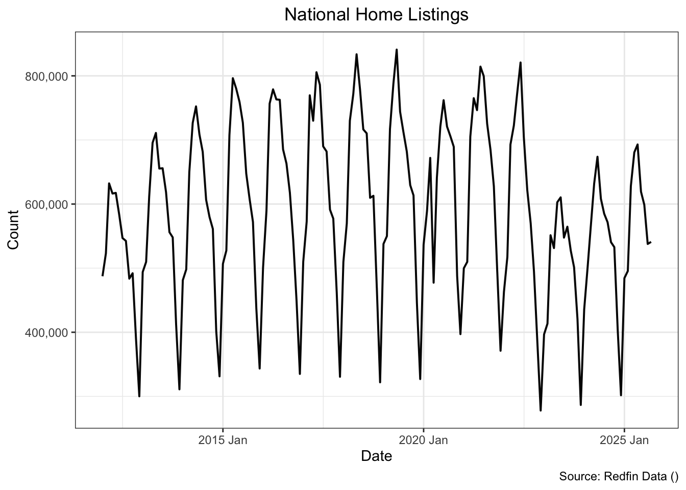
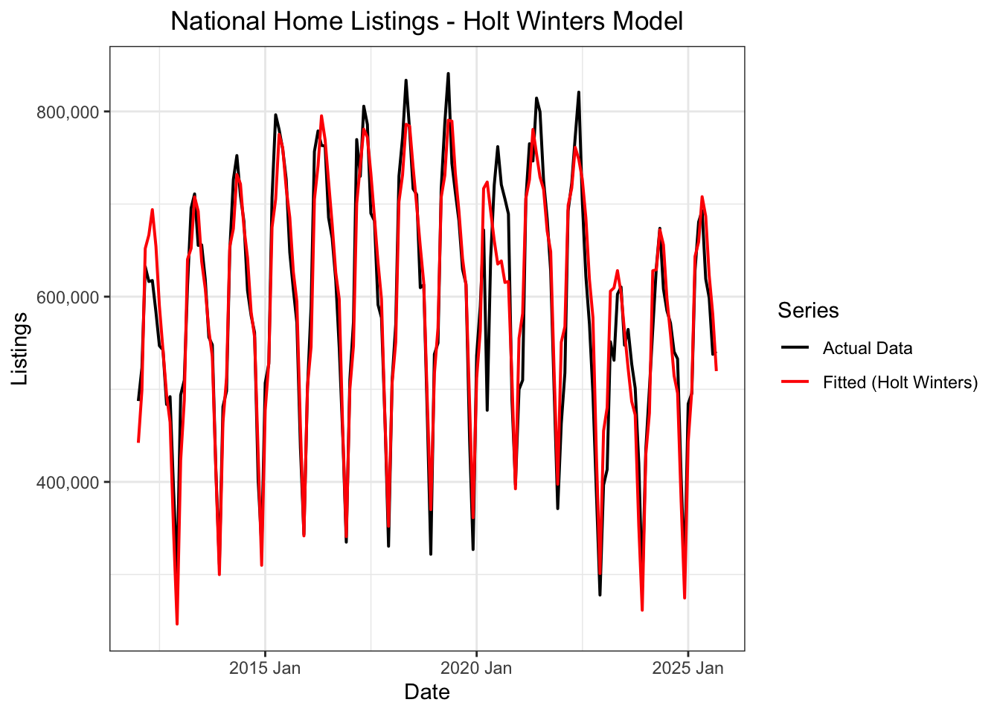
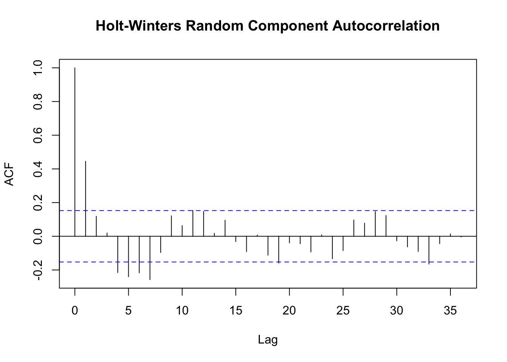
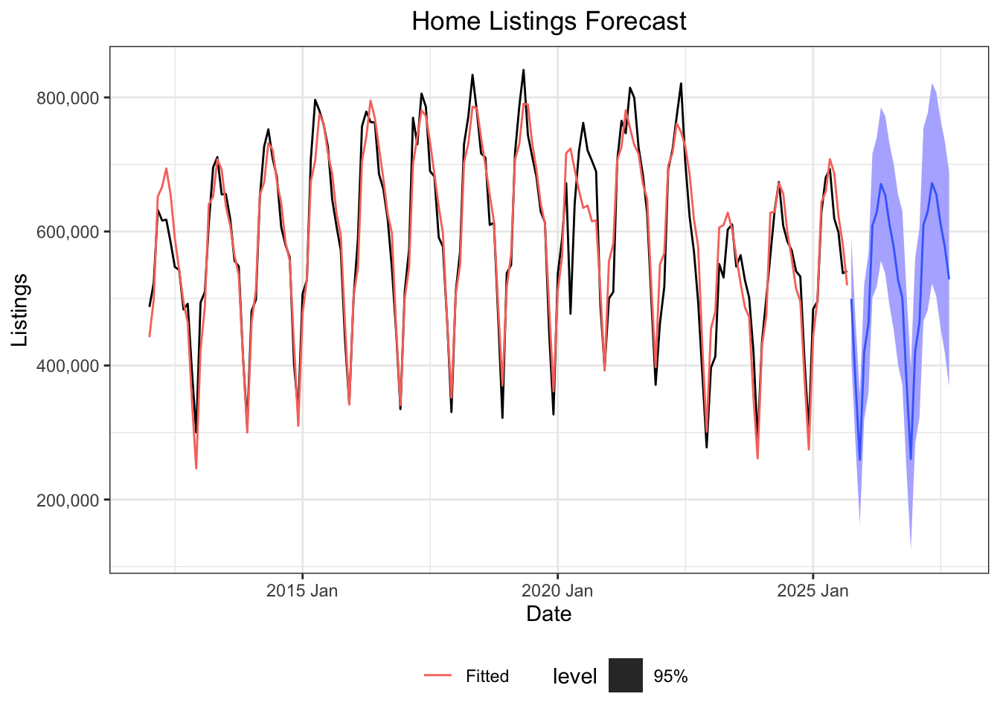

Holt Winters & Exponential Smoothing
Exponential Smoothing
When analyzing time series data, we often use averages to filter out random fluctuations and reveal underlying patterns. Traditional averages treat all data points equally, summing values over a period and dividing by the count. However, for data that changes dynamically over time, this equal weighting has limitations.
Exponential smoothing offers a more adaptive approach by assigning greater importance to recent observations while still retaining information from the past. It uses smoothing parameters to control how quickly older data points lose their influence. This creates a balance, the model can respond quickly to recent shifts in the data while maintaining a memory of historical trends. Beyond understanding current patterns, exponential smoothing also enables us to forecast future values based on the weighted history of what came before.
Data
Redfinis an online real estate brokerage that helps people buy and sell residential properties. Through its online marketplace and access to Multiple Listing Services (MLS), Redfin compiles extensive housing data, which it shares publicly through its Data Center The site offers valuable data sets, such as median sale prices, active home listings, and median days on market, that provide insight into current regional and national housing trends. By applying exponential smoothing to this data, we can identify underlying patterns and forecast potential future market conditions.
The data set examined here tracks the number of home listings in the U.S. from March 2012 through July 2025. This represents the supply side of the housing market: the total number of homes available for purchase at any given time. According to basic economic principles, when supply increases (assuming steady demand), prices tend to fall; when supply decreases, prices typically rise. For real estate agents and homeowners, understanding these supply trends is essential for gauging market competitiveness, whether it’s a buyer’s market with plenty of options, or a seller’s market with limited inventory.
Holt-Winters Method
Holt-Winters exponential smoothing is a sophisticated forecasting technique designed specifically for time series data that exhibits both trend and seasonal patterns. Unlike simpler smoothing methods, Holt-Winters maintains three separate components, each with its own smoothing parameter: \(\alpha\) (alpha) for the level, \(\beta\) (beta) for the trend, and \(\gamma\) (gamma) for the seasonal component. These parameters control how responsive the model is to recent observations in each component. Higher values place greater emphasis on new data, allowing the model to adapt quickly to changes, while lower values create more stability by giving greater weight to historical patterns.
Selecting appropriate parameter values is critical for achieving reliable forecasts. While statistical software can automatically optimize these parameters by minimizing error metrics such as Mean Squared Error (MSE) or Mean Absolute Error (MAE), purely algorithmic optimization may not always yield the most practically useful model. The optimal parameters depend heavily on the underlying characteristics of the data and the forecasting context.
Effective use of Holt-Winters requires balancing statistical optimization with domain knowledge. Understanding the data generation process, recognizing external factors that influence patterns, and considering the intended use of the forecast all inform parameter selection. This contextual approach ensures that the model not only fits historical data well but also produces meaningful and actionable predictions for future values.

For the model I used the following smoothing parameters:
\(\alpha\): 0.3
\(\beta\):0.001
\(\gamma\):0.0001
For this housing market analysis, I selected a larger \(\alpha\) (alpha) value because recent data carries greater weight for real-world decision-making—buyers, sellers, and agents need to understand current market conditions rather than historical averages. The smaller \(\beta\) (beta) value produces a smoother, more stable trend line that better captures the long-term direction of the market without overreacting to short-term fluctuations. Finally, I chose a small \(\gamma\) (gamma) value because the seasonal pattern in housing listings is highly consistent and predictable from year to year: listings reliably peak in spring and summer, then decline in fall and winter. This stability means we don’t need the model to adjust seasonal estimates aggressively, and a lower gamma value helps prevent over fitting to minor year-to-year variations.
The chart below shows how strongly the residuals (leftover random variation) are correlated with themselves across different time lags. The horizontal axis represents the lag—the number of time periods we’re looking back. Lag 0, the first bar, always equals 1 because any data is perfectly correlated with itself. Lag 1 examines the correlation between consecutive time periods, lag 2 looks two periods back, and so on. The vertical bars indicate the strength of correlation: taller bars mean stronger relationships. The two blue dotted lines form the confidence band, the critical threshold for statistical significance. Bars that fall within this band suggest no meaningful correlation (which is what we want in residuals), while bars extending beyond the band indicate statistically significant patterns that our model may have missed. In an ideal scenario, nearly all bars should remain within the confidence band, confirming that only random noise remains after accounting for trend and seasonality.

In the correlogram shown, nearly all bars fall within the blue confidence bands, indicating no statistically significant autocorrelation in the residuals. This is the desired outcome, as it suggests our Holt-Winters model has successfully captured the systematic patterns in the data. It’s worth noting that even with perfectly random residuals, we expect approximately 5% of the bars to extend beyond the confidence bands purely by chance, this is a natural consequence of using 95% confidence intervals.
However, it’s important to distinguish between statistical significance and practical significance. While a bar may technically fall within the confidence band, the overall pattern across multiple lags can still provide valuable information. In this case, the subtle “shape” visible in the correlogram, a slight wave-like pattern in the bar heights, may hint at residual seasonality that the model didn’t fully capture. This doesn’t necessarily indicate a flawed model, but rather suggests that additional diagnostic testing could be valuable. Techniques such as examining seasonal sub series plots or testing alternative seasonal period lengths might reveal whether further refinement would meaningfully improve the model’s performance. Understanding these nuances requires both statistical rigor and contextual knowledge of how housing market dynamics actually behave.
Forecast

It is essential to recognize that all forecasts are estimates based on historical patterns and the assumption that current underlying conditions will remain relatively stable. Time series models like Holt-Winters extrapolate from the past, meaning they cannot anticipate unforeseen disruptions such as regulatory changes, shifts in market sentiment, economic recessions, or extraordinary events like the COVID-19 pandemic’s impact on housing demand. When the fundamental drivers of a market change, model predictions may quickly become unreliable.
Despite these limitations, forecasts remain valuable tools for informed decision-making. They provide a quantitative baseline for understanding current trends and their likely continuation under stable conditions. For real estate professionals, these projections can guide inventory management, pricing strategies, and timing decisions. For policymakers and economists, they offer insights into market momentum and potential pressure points. Rather than treating forecasts as definitive predictions, they are best used as one input among many, a data-driven perspective that, when combined with qualitative judgment and awareness of emerging risks, supports more thoughtful and strategic planning.
Conclusion
This analysis demonstrates the practical value of exponential smoothing methods like Holt-Winters for understanding complex time series data. Through careful decomposition and parameter selection, we can separate underlying trends from seasonal fluctuations and random noise, revealing insights that might otherwise remain hidden in the raw data. For housing market analysis specifically, this approach illuminates both the predictable rhythms of buyer and seller behavior and the longer-term structural shifts in inventory supply.
The autocorrelation analysis of the residuals confirmed that the model successfully captured the systematic patterns in the data, with nearly all correlations falling within the expected range of random variation. This validation suggests the chosen smoothing parameters were well-suited to the data’s characteristics. However, the subtle wave-like pattern observed in the correlogram indicates that while the model performs well overall, opportunities for further refinement may exist. Additional diagnostic testing—such as examining alternative seasonal specifications or testing for structural breaks—could potentially enhance the model’s accuracy and provide even deeper insights.
Ultimately, this exercise highlights how statistical methods can transform historical data into actionable intelligence. By understanding not just what happened, but why patterns emerge and how they might continue, decision-makers gain a more nuanced perspective on market dynamics and future possibilities.